Objectives
QlikView is a user driven business intelligence tool that helps people make decisions based on a variety of insights drawn from data, people and the environment.
Business discovery helps users ask and answer their own questions and follow their own paths to insight. It also enables teams to reach decisions collaboratively.
These labs will introduce you to QlikView, teaching you how to create dashboards with interactive components.
Introcution to QlikView
QlikView applications have .qvw extensions.
Download the movie database. Open QlikView on your laptop by finding it in your programs menu.
From the file menu choose open, navigate to the the folder where you saved the QlikView movie application.
Read the intro page and then click get started. This brings you to the next tab called How QlikView works. Practice selecting a fruit and seeing how the displayed data is presented.
Now explore the traditional OLAP tab. click the magnifying glass by the word "Director", and then type "Wo". A search box displays with a list that includes Woody Allen.
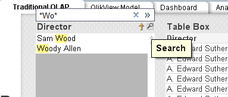
Click Woody Allen. A list containing Woody Allen's films displays.
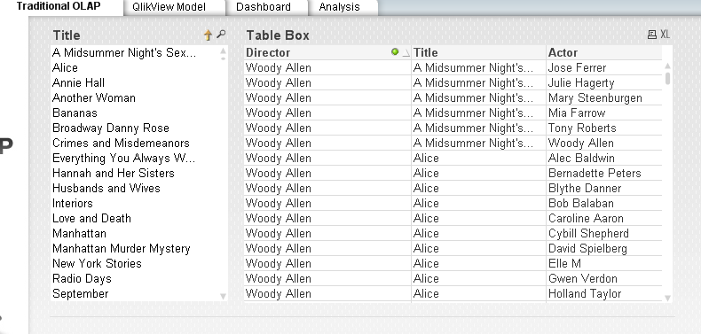
With traditional OLAP the navigation path to analyse data is predefined. Usually it is a top down hierarchy.
Next click Clear and then go to the QlikView Model tab.
Click the magnifying glass in the Title field. Type "Bananas", and then select it.
You can see Bananas shows in green, this is the data you have choosen, to the left you can see Woody Allen's name in white this means that data is associated to Bananas and the other directors in the list are grey and thus not associated. To the right you can see a list of actors in white, all of whom are in the film Bananas.
Make sure you still have Bananas selected in the title box, next click on the actor Woody Allen. You can then unclick the Bananas selction and it will show you all the films and associated directors that woody allen has been an actor. You can see he has played in movies by two other directors.
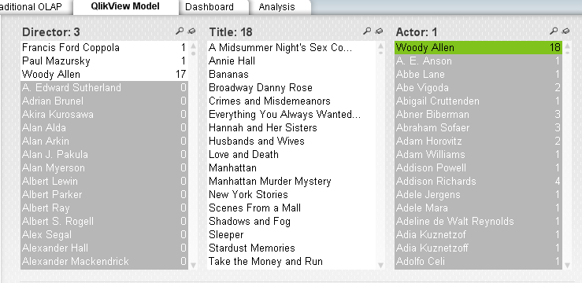
In the directors list click on Woody Allen, you can then see the 17 movies he acted and directed.
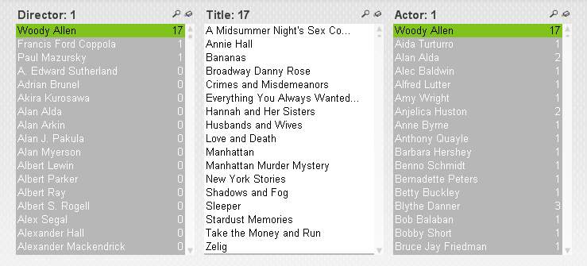
Searching
QlikView searches for field values matching a text string that you type. When you start typing, by default it is surrounded by two * wildcard characters. You can remove either or both of the wildcards or use different ones, such as ? for any single character.
You can also do numeric searches.
A fuzzy search
uses the ~ tilda, it is particularly useful where spelling mistakes in data entry is a problem. It can help you find values that are near-identical to each other.
In the movie application, first clear all selections. On the QlikView model sheet, click the magnifying glass on the Director List box. Clear both asterisks **, and then type ~bargman. Check the results.

Select Excluded
is an important search feature in QlikView. It allows you to, for example, search for products that have not been sold in certain regions or customers that haven't placed an order on a certain date.
If you want to pick a film that does not have a particular actor. The actor field contains over 4800 actors so it would be hard to select only those you wish to see. With select excluded you select the actor you want to exclude, right click and then choose "select excluded"
Associative searches
is another powerful feature in QlikView, it allows you to search related fields that are not presented in the list box. When you click on the double cheveron >> it will show you any related fields.
Using the QlikView model sheet clear all selections, click the Title list box and type 1950. Click the chevron >> and click 1950's in the Decade field.

Then type 4 and choose the Rating field.
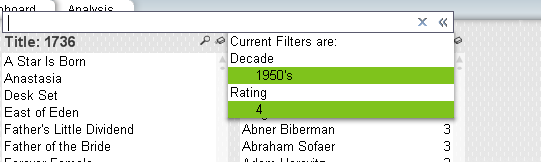
Then press Enter.

The title list box displays the films from the 1950's with a rating of 4. Click the analysis tab, and click Movie List. The table shows Title, Year, Minutes, Rating and Director for the selected films.

Expressions
You can use expressions in the searches such as =, <, >
Clear all selections, type the following into the Title list box:
=Rating=4 and Year=1950Press return. Note that the string is evaluated if there is a one-to-one relationship between the field you search in and the related fields. In this case title and rating has a one to one relationship and title and year has a one to one relationship.
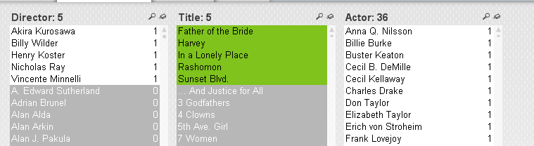
"AND" search
To search for movies with Sofia Coppola and Nicolas Cage appearing together was need to select both actors. If you select Nicolas Cage in the actor box and then select Sofia Coppola you cancel the value you selected first. You must press the Ctrl key when selecting more than one.
The resulting list displays films where either Nicolas Cage or Sofia Coppola appear.
If we want to see films that star both of them we have to do the following:
Clear all selections. Type and select Sofia Coppola in the Actor list box. Next right click in the Title list box and choose Clear Other Fields. This means the movies that Sofia Coppola stars in are selected green and the Actor list has gone all white ready for a new selection. Type in Nicolas Cage. The title list now shows the two movies they star in together.
ABC Sales application
ABC Apparel, Inc is an international apparel company. They are looking for a QlikView application for the analysis of sales.
User Roles
CEO (Chief Executive Officer) KPI's and measures:
- Trend of total sales and number of orders CYTD (current year to date) and how this compares to LYTD (last year to date)
- Sales by Division and Category
- Number of orders CYTD and how this compares to LYTD
- Margin percent by product group and by country
Examples of use scenarios:
- How the CYTD sales are in comparison to last year this time as well as monthly sales
- What does the sales trend look like?
- How do the CYTD sales vary by division or region? Are there regions that are performing well in sales that can offer help to regions that are not performing that well?
- Has the order value improved since the previous month/year?
- Has the number of orders improved since the previous month/year?
CMO (Chief Marketing Officer) measures and dimensions:
- CYTD customer performance versus LYTD
- Product performance CYTD versys LYTD
- Trends
- Number of orders per product category
- Last orders placed
Examples of use scenarios:
- The marketing department would like to run a campaign highlighting top-selling products in the regions. Therefore it needs to determine which products are top sellers in each region. Does this differ by region?
- Marketing would like to reacho out to customers who have not made a purchase in the past six months. They need to determine who these customers are.
- What is the average number of orders each cusotmer has made and what is the average value of these order? Is there a correlation between these two?
- Are there many one visit customer who have only placed an order with the company once? The CMO needs to view the customer details of these customers. Did these customers receive discounts with their orders?
Sales Manager measures and dimensions:
- CYTD sales persons' performance versus LYTD
- Top and bottom sales persons - based on sales
- Sales persons' performance over time
Examples of use scenarios:
- Who are the top five and the bottom five sales persons?
- What are the top products for the top slaes persons?
- Do these sales persons tend to have customers who place multiple orders or single orders?
- How is the discount related to average deal size?
The application
You are going to build a single application for the CEO, CMO and sales manager. In a real world business scenario, it is more likely that you design separate applications for the distinct user group. But for this exercise you will design one application.
ABC apparel are interested in analysing their data over time. Time must be displayed based upon the order date field in the dataset. Analysis must be possible based upon Year, Month or Quarter values for the entire dataset. In order to filter the data, these fields are defined as the main dimensions:
- Customer country
- Sales person
- Product category
- Product
- Customer
Key Measures
- Sales KPI: total of the LineSalesAmount sum(LineSalesAmount)
- Sales CYTD KPI: total of the LineSalesAmount field starting from the beginning of the current year to to the present day Sum(LinesSalesAmount * CYTDFlag)
- Margin KPI: total of the margin field sum(Margin)
- Margin CYTD KPI: total margin from beginning of current year to present day sum(Margin * CYTDFlag)
- Margin % KPI: percentage of sales containing margin sum(Margin)/sum(LineSalesAmount)
- Orders KPI: the number of individual orders count(DISTINCT OrderID)
- Average Deal size: sales divided by orders sum(LineSalesAmount)/count(DISTINCT OrderID)
- Products: number of unique products sum(RecNo_Products)
- Discount: average of the discount in percentage avg(discount)
Dashboard Design
D-A-R concept: We recommend you use the D-A-R (Dashboard, Analysis, Report) concept. Laying out the QlikView application according to D-A-R helps the user to get an overview of hte situtaiton, then flow into details required for anlaysis, and then, if needed, gets into the greater details of reporting. You saw this in the movies application. This is not a linear process, users can navigate across pages at any time.
Create a new application
Close the movies application by selecting File, close.
Next choose New from the File menu, then choose save from the file menu. Name your application ABC_Sales and click Save.
There are some document properties that are useful to set before starting, they mean that layout remains consistent throughout the application.
First save the following image to the same folder you have saved your application.
{kind=link}
- Open the Settings menu, and then Document Properties.
- In the General tab for Title, type ABC Sales App.
- Under Author, type your name or initials. Under
- Under Default Sheet Background, select Wallpaper Image.
- Click the change button. The select Image dialog opens.
- Navigate to the background image you already saved.
- Select Image Formatting: No stretch, Horizontal: Left, and Vertical, Top;
- Under Styling Mode, select Simplified
- Under Sheet Object Style, select Transparent
- Under Tabrow Style, select Straight.
- On the Font tab select Arial, Font Style Regular, and Size 10
- On the Layout tab, under Shadow Intensity, select No Shadow, and Border Width 1 pt
- On the Caption tab, click Font, select Arial, Font Style Bold, and Size 10.
- Click Ok twice.
The Data Model
QlikView works with many different types of data sources (SQL Server, Sybase, Access, Oracle, SalesForce, Excel, .txt, .csv, and html files)
A QlikView application with the .qvw file extension is a file containing everything needed to analyse the data:
- The data itself
- The script needed to update the QlikView file with new data from the data source
- Layout information, including all the sheets, list boxes, charts and so on
- Document alerts, document bookmarks and document reports
A .qvd file contains a table of data exported from QlikView. It can only be read and written to using QlikView. It is optimised for speed when reading data but is also very copact. Reading data from a qvd file is typically 10 to 100 times faster than reading from other data sources.
To retrieve data for a QlikView application, you write and execute a load script. This script specifies the data source, the tables, and the fields to be loaded. When executing the script, the loaded data is kept in an internal data model, which is saved with the QlikView application. This data set is then evaluated each time a value is selected in the applications layout.
Data files for your ABC apparel application
The facts table contains the primary data source for the QlikView application. It contains order data.
The customers table contains information about the customers.
The products table contains information about the products and product categories.
The sales spreadsheet contains employee information for the application and is maintained by the company's HR department.
The calendar text file contains the script for the calendar and has to be included in the load script.
Save all of these files into the directory that stores your ABC_Sales application.
Data Structure
Each field from a data source loaded into QlikView becomes a field in the QlikView associative data structure. Fields that display in more than one table and have identical names are associated and identified as Key fields.
Load Data
- Ensure your ABC_Sales application is still open.
- From the file menu, select Edit Script (Ctrl+E). The Edit Script dialog displays.
- Place the cursor in the script area on an empty row below the last script statement.
- On the Data tab, under Data from Files, select Relative Paths.
- Click the Table Files button. The Open Local Files dialog displays.

- Under Open Local Files, locate the Facts.qvd file and click Open.
- The File Wizard: Type dialog displays.
- Click Finish.

- Above the LOAD statement, remove the word Directory; and type Facts; 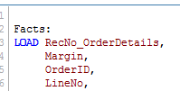
- Click the Reload button to execute the script and load the data.
- The Sheet Properties dialog displays a list of the fields imported from the qvd. 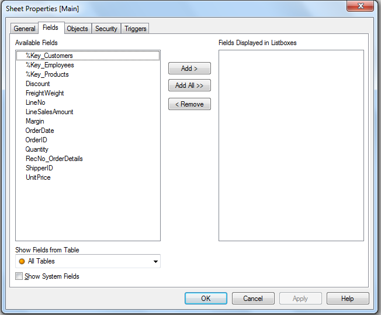
- Click OK to close the dialog.
Exercise
Now load the Customers.qvd and the Products.qvd files.
Data linking
It is good practice to ensure that the data is loaded correctly after adding tables to your data model. The Table Viewer is the preferred dialog in QlikView if you want to examine how the data is related.
This dialog is used to display the data table structure of the current QlikView document. Tables are shown as boxes with a list of the fields they contain. Connector lines between the boxes show the associations. Where more than two lines meet there are connector points in the form of small dots.
- Open the Table Viewer dialog by selecting Table Viewer from the File menu or pressing Ctrl+T.
- Ensure that all tables are connected by key fields.
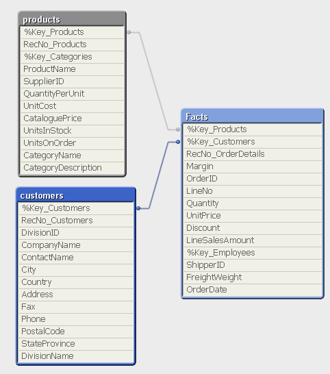
- Click ok to close table viewer
Load Excel file
- Open the Edit Script dialog (Ctrl+E)
- Place the cursor on an empty row below the load script for the qvd files.
- Under the Data From Files, click the Table Files button.
- From the Open Local Files dialog navigate to the SalesPersons_Offices.xls file that you saved earlier. Click Open. 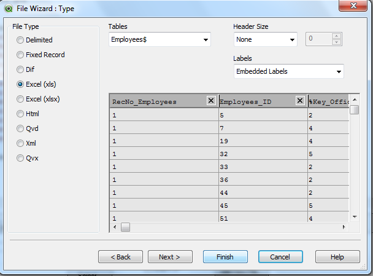
- In the File Wizard dialog under tables, ensure that Employee$ is selected.
- From the Labels field, select Embedded Labels
- Click Finish.
- Name the table in the load script, replace Directory; with SalesPersons:
- Click Reload
- The Sheet Properties dialog displays a list of the loaded fields. Click ok.
- Open the Table Viewer (Ctrl+T)

Why is the SalesPersons table not connected to the Facts table?
Connecting tables
You need to connect the SalesPerson table to the Facts table. Therefore we need to have a common field name. We must rename the Employees_ID field to be called %Key_Employees
- Open the Edit Script
- Locate the script lines for loading the Facts table.
- Select %Key_Employees and copy it.
- Locate the script lines for loading the SalesPersons table, place your cursor between Employees_ID and the comma
- Type "as" and then paste the name %Key_Employees, your script should look as follows:
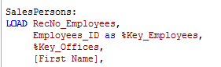
- Click Reload, close the sheet property dialog and open table viewer to make sure the connection has occured.
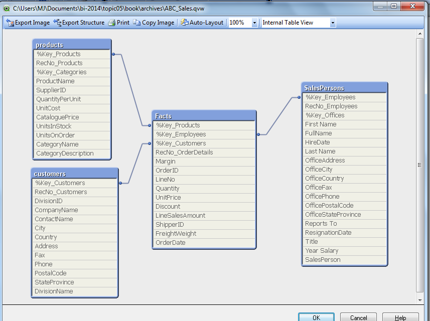
Load Master Calendar script
- Edit the script
- Place cursor on a blank line from the Insert menu choose Include Statement.
- Locate the MasterCalendar.txt file you saved earlier. Click open, click reload and ok to close the sheet properties dialog.
- Open table viewer to ensure that the MasterCalendar table is properly linked to the Facts table.
You can now clearly see the central fact table and the four dimensions that surround it, customers, calendar, products and sales persons.
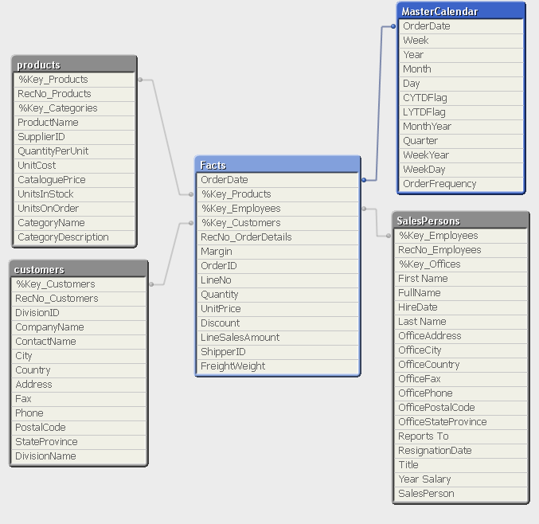
Save your work.